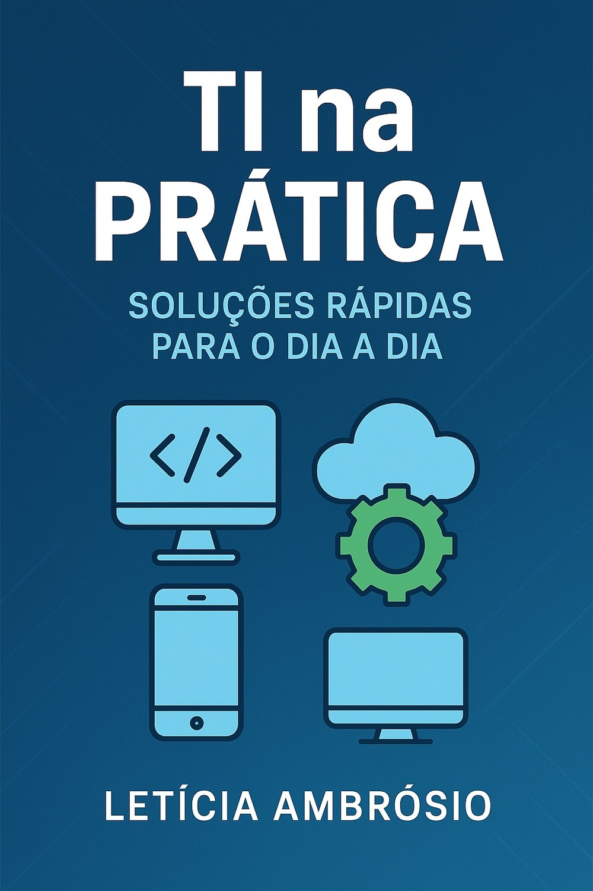

VISÃO GERAL ● Indicadores
RECEITASR$ 24,8 mil↗ Exemplo
RESULTADOR$ 8,4 mil↗ Exemplo
Desempenho mensal Dados ilustrativos
JANFEVMARABRMAIJUNJUL
Profissional de TI · Freelancer
Desenvolvo sites, planilhas inteligentes, dashboards e ferramentas digitais para facilitar a gestão e a organização financeira de pessoas e empresas.
Sou formada em Tecnologia da Informação e tenho foco em Excel avançado, planilhas e análise de dados. Meu objetivo é ajudar pequenos negócios a organizar informações, acompanhar indicadores e tomar decisões com mais segurança.
Estou construindo meu portfólio e ampliando meus conhecimentos em finanças, unindo tecnologia e dados à organização financeira.
Entre em contato ↗Fórmulas, tabelas, validação de dados, gráficos e planilhas estruturadas.
Painéis visuais para acompanhar indicadores e apoiar a gestão.
Organização, tratamento e interpretação de informações.
Ferramentas práticas adaptadas aos processos de pequenos negócios.
Planilha editável em Excel para organizar receitas, despesas e acompanhar resultados financeiros.
Consultar pelo WhatsApp ↗
TI na Prática: soluções rápidas para o dia a dia. E-book de Letícia Ambrósio.
Adquirir e-book na Hotmart ↗Conheça meus trabalhos pessoais, produtos digitais e próximos projetos.
Site responsivo de apresentação, serviços e produtos digitais, publicado no GitHub Pages.
Ver site ↗Organização financeira em Excel.
Conhecer produto ↗Controle de receitas, despesas e indicadores financeiros para pequenas empresas.
Cadastro de produtos, entradas, saídas e acompanhamento de quantidades.
Relatórios e gráficos para acompanhar faturamento e desempenho comercial.
Planilha para registro e acompanhamento de investimentos.
Ferramenta para acompanhar entradas e saídas.
Planilha para organizar orçamento e metas.
Os projetos planejados são propostas para o portfólio, não cases de clientes.
Sites institucionais, portfólios e landing pages responsivas.
Organização de tarefas repetitivas e controles em Excel.
Organização de controles financeiros, estoque e vendas.
Indicadores e visualizações para facilitar o acompanhamento de resultados.
Estruturação e padronização de informações em planilhas.
Precisa de um site, planilha personalizada, dashboard ou análise de dados? Vamos conversar sobre seu projeto.
● Disponível para projetos freelancer